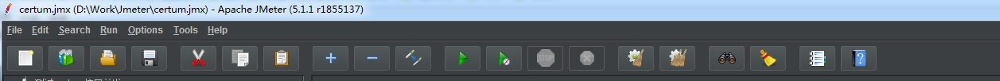
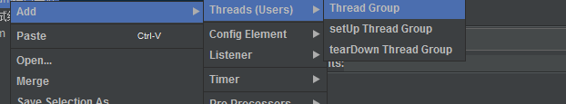
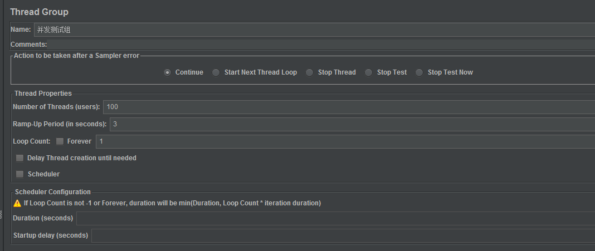
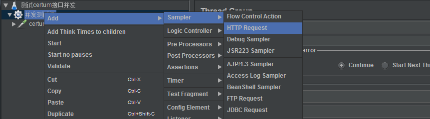
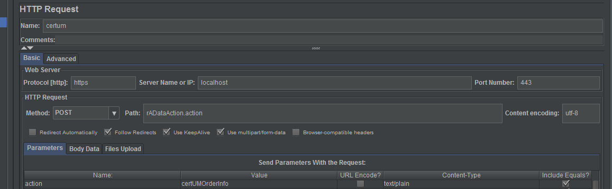
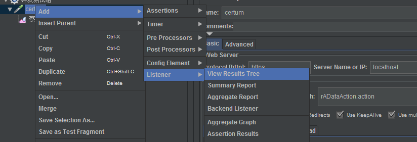
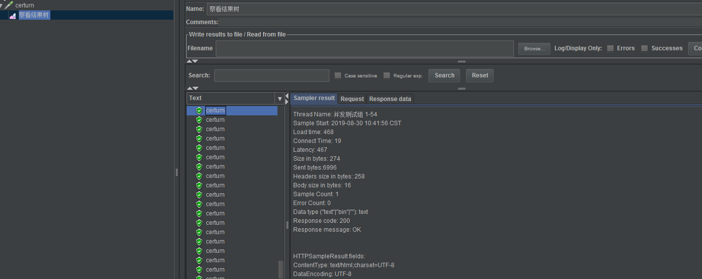

由于生产出现个并发问题，本地没法重现。后来网上有人说使用jmeter可以测试并发，也有人说postman可以测试。但本着试试新鲜的东西，就用jmeter。
下载加压，然后运行jmeter.bat。我的是windows版本的。linux应该对应的是jmeter.sh。
跳出一个窗口

可以在options里面选择中文。
右键新建一个线程组


Number of Thrads:需要模拟多少个用户执行即需要多少个线程
Ramp-Up Period:意思是说在一个周期内执行完上面的线程
Loop Count:应该是循环执行的意思，没仔细查看。

右键线程组新建一个http请求。

下面这个界面就非常熟悉了。
模拟一个form的请求。
协议由于我的服务器配置了证书，需要https请求。
再新建一个结果观察树，直观的看到接口返回信息。

执行之后可以查看到如下结果：
